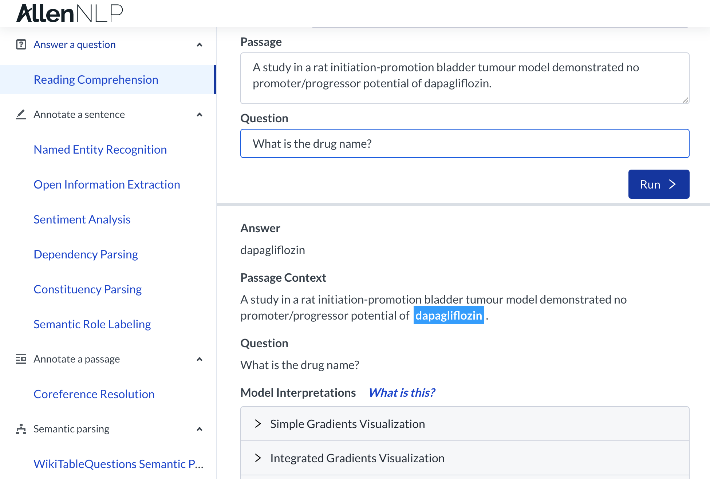
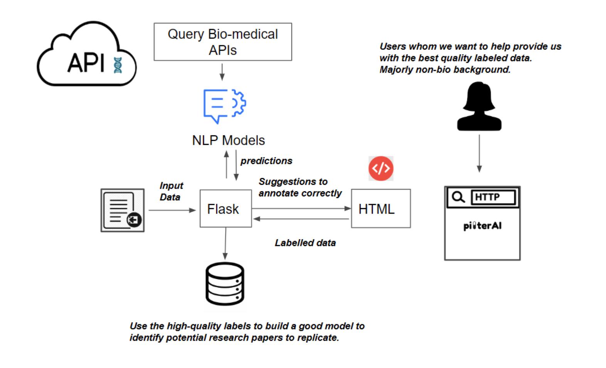

IBM Research Challenge: Pilter AI

Description
There are many studies published on the utilization of generic drugs for cancer treatment. Analyzing these data is a huge challenge for automation, with little profit incentive, which is why Cures for Cancer within Reach is taking on this challenge.Patients and their families are often eager to help with cancer research-- and we'd like to help them feel empowered during an otherwise difficult period of time in their lives. With this in mind, we created a machine learning powered interface for annotating scientific abstracts. It uses suggestions to help guide a typical user (i.e. someone who may not have a biomedical background) through the annotation process.
Details
Date: January 2020Team: Sejal Dua, Smruthi Ramesh, Anastasia Spangler, Ashvini Varatharaj, Sulbha Aggarwal
Related: #Hackathon #NLP #CancerResearch #DrugRepurposing
Language(s): Python, HTML, CSS
Tools & Technologies: Python Flask, AllenNLP, SciSpacy
Approach
 This project involves breaking down overwhelmingly technical text into information that can be used to identify promising cancer research directions. Therefore, when implementing the machine learning model to aid the user in labeling / annotating the data, our first priority was to create something that does not require them to read the full abstract or parse through its complex biomedical jargon. We aimed to make it the user's sole job to evaluate and improve our machine learning model.
This project involves breaking down overwhelmingly technical text into information that can be used to identify promising cancer research directions. Therefore, when implementing the machine learning model to aid the user in labeling / annotating the data, our first priority was to create something that does not require them to read the full abstract or parse through its complex biomedical jargon. We aimed to make it the user's sole job to evaluate and improve our machine learning model.
 The most promising tool at our disposal was Allen NLP, which is an open-source NLP research library, built on PyTorch. They have a functionality called "Reading Comprehension." This deep learning tool allows for the input data to be in the form of question and the output data to be in the form of an answer (or answer choice in the case of multiple-choice questions). We used Allen NLP as an API that we direct queries to, and used the output from the pre-trained ELMo-BiDaF models as suggested answers for the user.
Our goal was to obtain the following four annotations from the user for any given abstract:
Drug: What generic drug has been tested?
Cancer: What type of cancer was it tested on?
Therapeutic Association: How does the generic drug influence cancer?
Study Type: Which type of experiment was performed? For each annotation category, we engineered the input and output specifications by testing which types of query strings return most accurate results when compared against the labeled data for this project.
Drug: What generic drug has been tested?
Cancer: What type of cancer was it tested on?
Therapeutic Association: How does the generic drug influence cancer?
Study Type: Which type of experiment was performed? For each annotation category, we engineered the input and output specifications by testing which types of query strings return most accurate results when compared against the labeled data for this project.
Pipeline and Tech Stack

-
Python: backend and Natural Language Processing
Flask: integration of frontend and backend
Jupyter Notebook: testing, exploratory data analysis, and development
sci-kit learn: training machine learning-based text classifiers
regex: clean dataset, eliminating non-ASCII character set
NLTK (Natural Language Toolkit): text processing for classification models
HTML / CSS: UX/UI design
Javascript / jquery: validations and dynamic elements in frontend
Heroku: hosting server
AllenNLP: framework used for Natural Language Processing
scispaCy: used to extract biomedical terms and pre-process text for deep learning
Key Learnings & Reflections
teamworkBuilding our hack in a matter of less than 48 hours was an intense experience, but by utilizing each other's strengths, we were able to delegate tasks efficiently.
design
Spending some time to draft an initial design of our hack on paper was crucial to our success. This ended up saving us a lot of time in the long run.
Spending some time to draft an initial design of our hack on paper was crucial to our success. This ended up saving us a lot of time in the long run.
hackathon
This was my first hackathon ever. I learned that meeting people and bonding with people helps establish team chemistry which translates toward a better final product. I also learned that given the nature of hackathons, it is important to strive for a working demo rather than perfection!
This was my first hackathon ever. I learned that meeting people and bonding with people helps establish team chemistry which translates toward a better final product. I also learned that given the nature of hackathons, it is important to strive for a working demo rather than perfection!